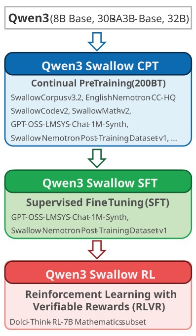

February 20, 2026
Qwen3 Swallow
Qwen3 Swallow is a reasoning LLM (8B, 30B-A3B, 32B) that enhances the Japanese language proficiency and reasoning capabilities of Alibaba's Qwen3. The model parameters (weights) are released under the Apache 2.0 license. Qwen3 Swallow was developed by the Okazaki Laboratory and the Yokota Laboratory at Institute of Science Tokyo and the National Institute of Advanced Industrial Science and Technology (AIST).

Features
Powerful Reasoning LLM
The 8B and 32B models achieved state-of-the-art performance on Japanese tasks among open LLMs of comparable or smaller size (as of February 2026).
Open LLM
Because the model weights are publicly available, it can be deployed in on-premise environments without concerns about information leakage and can be fine-tuned for specific tasks/domains.
A Recipe Specialized for Reasoning Models
To enhance reasoning capabilities, we redesigned the entire training recipe of continual pre-training, supervised fine-tuning, and reinforcement learning.
Permissive License
To adopt the Apache 2.0 license, which allows free use for both commercial and research purposes, we carefully curated and rebuilt the training data.
Latest Reasoning LLMs
Models
Please enable reasoning mode when using the model
History
- 2026-02-20: Initial version (v0.2) released (v0.1 is skipped).
Performance
8B Model
We compared the performance of Qwen3 Swallow 8B RL with the following LLMs. For evaluation, we used the LLM evaluation framework swallow-evaluation-instruct. The evaluation results can also be viewed on Swallow LLM Leaderboard v2 (you can add other LLMs for comparison).
- Llama 3.1 Swallow 8B Instruct (the latest non-reasoning model built by the Swallow team)
- DeepSeek-R1-Distill-Llama-8B (a reasoning model distilled from DeepSeek R1 into Llama 3.1 8B)
- Olmo 3 7B Think (an open reasoning model of similar scale)
- Qwen3 8B (deep reasoning level enabled)
Note that the model used as the starting point for continual pre-training of Qwen3 Swallow 8B RL is Qwen3 8B Base, which is a pre-trained model without post-training. In other words, deep reasoning must be elicited through continual pre-training and post-training within the Swallow project, and exploring the recipe for this is one of the objectives of this model development.
In addition, both models start from the same Qwen3 8B Base. The model post-trained officially by Alibaba is Qwen3 8B, whereas the model trained by the Swallow team with continual pre-training, SFT, and RL is Qwen3 Swallow 8B RL. Therefore, the difference in performance between the two allows us to assess the quality of the continued pre-training and post-training recipes.

The average score of Qwen3 Swallow 8B RL on Japanese tasks is 0.557, achieving the highest performance among open LLMs with a total parameter count of 8B or fewer. On all tasks except MMLU-ProX-Ja and MATH-100, Qwen3 Swallow 8B RL outperformed Qwen3 8B (the score on MATH-100 was the same). In particular, on JamC-QA, which measures knowledge about Japan, performance improved by +4.6 points, and on Japanese GPQA, a benchmark designed for reasoning models, the score increased by +3.8 points, confirming the emergence of deep reasoning capabilities. Although not shown in the graph, the average score on Japanese MT-Bench is 0.844, indicating very strong dialogue capabilities for a model of this scale.
The average score of Qwen3 Swallow 8B on English tasks is 0.694, which does not surpass Qwen3-8B. In the development of Swallow models, we prioritize Japanese over English, but there may still be room for improvement in the continual pre-training recipe. Nevertheless, the model outperforms reasoning models of similar scale, such as DeepSeek-R1-Distill-Llama-8B and Olmo 3 7B Think.
30B-A3B and 32B Models
Qwen3 Swallow 30B-A3B RL and Qwen3 Swallow 32B RL differ in architecture—Mixture-of-Experts (MoE) versus dense model—but have approximately the same total number of parameters, so we compare them together. The former is based on continual pre-training from Qwen3-30B-A3B-Base, while the latter is based on Qwen3-32B. In other words, the former involves continual pre-training from a pre-trained model, whereas the latter involves continual pre-training from a post-trained model (since the pre-trained version of Qwen3 32B has not been publicly released).
The average scores on Japanese tasks were 0.591 for Qwen3 Swallow 30B-A3B and 0.609 for Qwen3 Swallow 32B. In particular, Qwen3 Swallow 32B achieved the highest performance among open LLMs with a total parameter count of 32B or fewer. Moreover, Qwen3 Swallow 32B outperformed its continual pre-training source model, Qwen3 32B, on all tasks except Japanese–English translation (the difference in translation score was only 0.1 points, which can be considered within the margin of error).
For both Qwen3 Swallow 30B-A3B and 32B, the tasks showing particularly notable improvements over their baseline models were JamC-QA (+3.6 and +3.9 points), English–Japanese translation (+7.3 and +2.6 points), and GPQA (+3.8 and +3.6 points). These results suggest that our objective—incorporating knowledge about Japan and the Japanese language through continued pre-training, and enhancing reasoning ability through SFT and RL—has been successfully achieved. Although not shown in the graph, the average scores on Japanese MT-Bench were 0.889 and 0.894, approaching the upper limit of dialogue capability measurable by this benchmark.

The average scores on English tasks for Qwen3 Swallow 30B-A3B and 32B were 0.732 and 0.792, respectively. In particular, Qwen3 Swallow 32B achieved the highest performance among open LLMs with a total parameter count of 32B or fewer. While Qwen3 Swallow 32B outperformed the baseline on many tasks, Qwen3 Swallow 30B-A3B fell below the baseline on many tasks, and its average score was also lower than that of the baseline.
Next, we compare with reasoning models of similar scale.
- Olmo 3 32B Think (an open reasoning model of comparable scale)
- QwQ Bakeneko 32B (a reasoning model created by applying QwQ chat vectors after 18B-token continual pre-training of Qwen2.5 32B)
- ABEJA-QwQ32b-Reasoning-Japanese-v1.0 (a reasoning model created by applying QwQ chat vectors after 100B-token continual pre-training of Qwen2.5 32B Instruct)
- ELYZA-Thinking-1.0-Qwen-32B (a model that elicits deep reasoning through SFT after continual pre-training of Qwen2.5 32B Instruct)
Among the compared models, Qwen3 Swallow 32B recorded the highest average score and showed no clear weaknesses across tasks. Olmo 3 32B Think is described by its developers as not being specifically targeted at Japanese, which explains its relatively lower scores on JamC-QA and English–Japanese translation (indeed, its performance is impressive given that it is not specialized for Japanese). Its relatively high scores on Japanese math and coding benchmarks suggest that strong foundational capabilities in English transfer effectively to Japanese.
QwQ Bakeneko and ABEJA-QwQ32b-Reasoning-Japanese-v1.0 enhance Japanese capability through continual pre-training and then elicit dialogue ability and deep reasoning not through SFT or RL, but via chat vectors (model merging). They show no obvious weaknesses, and in particular, QwQ Bakeneko demonstrates strong performance on JamC-QA. This suggests that chat vectors are highly effective; however, since this technique can only be applied within the same model family, its applicability as a general recipe for reasoning models is limited.
ELYZA-Thinking-1.0-Qwen-32B elicits deep reasoning through SFT, and results on MMLU-ProX, GPQA, and MATH-100 confirm the emergence of deep reasoning. However, its JHumanEval score is low, which differs from the results reported in the developer’s technical blog. Upon investigation by the Swallow team, we found formatting violations such as “strings output immediately after the closing triple quotes of a code block without a space or newline” and “multiple occurrences of </think> in the output.” These were not accommodated under the evaluation criteria of swallow-evaluation-instruct, which may have led to an underestimation of the model’s coding ability.
Similar trends were observed in the evaluation of English tasks as in Japanese. Based on these results, the Qwen3 Swallow series can be regarded as a high-performance reasoning model that supports both Japanese and English.
Method

Qwen3 Swallow is built in three stages starting from Alibaba Qwen3 8B, 30B-A3B, and 32B: Continual Pre-Training (CPT), Supervised Fine-Tuning (SFT), and Reinforcement Learning (RL). We release the fully completed Qwen3 Swallow RL model as the official version, and also provide Qwen3 Swallow SFT (before RL) and Qwen3 Swallow CPT (before SFT) as experimental versions.
In developing LLMs, which require massive computational resources, improving training efficiency is key to accelerating recipe exploration and ultimately impacts both performance and cost. In this model, we leveraged our accumulated expertise in low-precision training and distributed parallel training (Fujii+ 2024a, 2024b) to optimize computational efficiency. Specifically, in continual pre-training, we adopted Per-Block Scaling instead of conventional Per-Tensor Scaling (Micikevicius+ 2022), and executed linear layer computations using FP8 (E4M3) GEMM on Hopper-generation GPUs, achieving a 20% speedup. For details on the libraries, acceleration techniques, and hyperparameters used in developing Qwen3-Swallow, please refer to our blog article.
Prior to the released version v0.2, we developed an earlier model (v0.1). However, this version was not released because it exhibited issues such as failing to elicit deep reasoning when prompted in Japanese, and generating incomplete reasoning outputs (e.g., not producing the </think> tag to close the reasoning sequence).
Continual Pre-Training (CPT)
In continual pre-training (Fujii+, 2024), we aimed to enhance knowledge about Japan (Saito+, 2025) and Japanese dialogue capability (Ma+, 2025), while maintaining or improving advanced reasoning abilities in English, mathematics, science, and programming. The total size of the continual pre-training corpus was 200B tokens, with a balanced mixture of Japanese, English, mathematics, and coding data.
Nearly half of the training data consists of the latest version (v3.2) of the Swallow Corpus (Okazaki+, 2024), a large-scale Japanese web text corpus. This corpus was constructed by extracting Japanese web pages from snapshots of Common Crawl crawled up to March 2025, followed by deduplication and quality filtering. For quality filtering, we newly developed an n-gram-based classifier distilled from GPT-OSS Safeguard 120B.
Additional Japanese data includes question-answer data synthesized from the Swallow Corpus and Japanese Wikipedia. For English data, we adopted Nemotron-CC high quality actual (Su+, 2025), Cosmopedia, and English Wikipedia. As parallel data to improve translation capability, we used Laboro ParaCorpus and kaken-trans-ja-en. For mathematics and coding data, we used SwallowMath-v2 and SwallowCode-v2 (Fujii+, 2026), newly developed within the Swallow project.
Furthermore, to maintain the original model’s dialogue and reasoning capabilities while enhancing the effects of SFT and RL, we incorporated post-training data containing reasoning processes into the pre-training stage. As instruction-tuning data, we used GPT-OSS-LMSYS-Chat-1M-Synth, which was synthesized in both Japanese and English using GPT-OSS to generate reasoning processes and responses based on LMSYS-Chat-1M. For instruction-response and reasoning data in the domains of mathematics, science, and code generation, we used Swallow-Nemotron-Post-Training-Dataset-v1, which was created by synthesizing reasoning processes and responses with GPT-OSS from Nemotron-Post-Training-Dataset-v1.
Supervised Fine-Tuning (SFT)
Since post-training data is also used during continual pre-training, the CPT model is already capable of dialogue and deep reasoning. However, to further improve general dialogue capability and other aspects, we conducted supervised fine-tuning (SFT). After iterative experimentation, we adopted GPT-OSS-LMSYS-Chat-1M-Synth and Swallow-Nemotron-Post-Training-Dataset-v1, both of which were also used in continual pre-training.
Reinforcement Learning (RL)
To improve performance on tasks that require deep reasoning—such as scientific question answering (GPQA), mathematics (AIME), and code generation (LiveCodeBench)—we applied reinforcement learning. As the training algorithm, we adopted Group Relative Policy Optimization (GRPO) with Clip-Higher and Dynamic Sampling (Yu+ 2025), Truncated Importance Sampling (TIS) (Yao+ 2025), removal of the KL loss, and Rollout Routing Replay (Zheng+ 2025), which aligns policies and MoE experts between training and inference.
For training data, we used a mathematics subset of Dolci-Think-RL-7B for which we independently verified that there were no licensing issues, and we used the correctness of the final answer as the reward signal. In other words, this training process is called Reinforcement Learning with Verifiable Rewards (RLVR).
Quantization
To reduce computational cost and memory usage during inference while minimizing degradation of the reasoning performance acquired through reinforcement learning, we applied 4-bit quantization to the RL models. As quantization methods, we adopted GPTQ (Frantar+, 2022) and AWQ (Lin+, 2023), and used GPT-QModel for the implementation.
For calibration data, we generated 1,024 samples from prompts in the reinforcement learning dataset. We performed rule-based validation on the generated outputs and excluded samples in which the <think> tag was not properly closed, as well as samples with incorrect final answers. Only the valid samples obtained through this process were used for quantization calibration. Although the number of valid samples differs by model, overall approximately 80% of the samples were adopted as calibration data.
Performance Changes Across Model Construction Stages
Taking Qwen3-Swallow-8B, which was built starting from the pre-trained model Qwen3 8B Base, as an example, we analyze the knowledge and capabilities acquired at each stage by comparing the performance of the Continual Pre-Training (CPT), Supervised Fine-Tuning (SFT), and Reinforcement Learning (RL) models.
Compared to the starting point, Qwen3 8B Base (leftmost), the CPT model (second from the left) shows improved performance on almost all tasks, including mathematics (AIME) and code generation (LiveCodeBench), which require deep reasoning. This suggests that incorporating post-training data containing reasoning processes enabled the emergence of deep reasoning ability already at the continual pre-training stage (indeed, we confirmed that the CPT model produces responses with reasoning traces). Furthermore, since the performance on JamC-QA and translation remains largely unchanged from the CPT model to the SFT model (third from the left) and the RL model (fourth from the left), it can be inferred that knowledge about Japan and translation capability were primarily acquired through continual pre-training (Saito+, 2025).
Next, compared to the CPT model, the SFT model (third from the left) mainly improves on university-level exam benchmarks such as MMLU-ProX-Ja and MMLU-Pro, scientific question answering (GPQA), and mathematics benchmarks such as MATH-100 and MATH-500. Therefore, rather than a broad improvement in general capability, the gains may have primarily occurred in STEM-domain tasks aligned with the SFT training data GPT-OSS-Nemotron-Post-Training-Dataset-v1-Ja (Huan+, 2025).
Finally, compared to the SFT model, the RL model (fourth from the left) mainly improves performance on Japanese GPQA, AIME, and LiveCodeBench. This suggests that reinforcement learning further strengthened deep reasoning ability to a level capable of solving highly challenging problems. Moreover, although reinforcement learning was conducted exclusively on mathematics problems, improvements were also observed in scientific question answering (GPQA) and code generation (LiveCodeBench). This suggests that the deep reasoning ability enhanced through reinforcement learning generalized to out-of-domain tasks (Cheng+, 2025). Due to the effect of reinforcement learning, the model also surpassed Alibaba’s post-trained model Qwen 3 8B (rightmost) on benchmarks such as LiveCodeBench.
Publications
- Kazuki Fujii, Taishi Nakamura, Mengsay Loem, Hiroki Iida, Masanari Ohi, Kakeru Hattori, Hirai Shota, Sakae Mizuki, Rio Yokota, and Naoaki Okazaki. 2024. Continual Pre-Training for Cross-Lingual LLM Adaptation: Enhancing Japanese Language Capabilities. In Proceedings of the First Conference on Language Modeling (COLM), October 2024.
- Kazuki Fujii, Kohei Watanabe, and Rio Yokota. 2024. Accelerating Large Language Model Training with 4D Parallelism and Memory Consumption Estimator. arXiv:2411.06465.
- Kazuki Fujii, Taishi Nakamura, and Rio Yokota. 2024. Balancing Speed and Stability: The Trade-offs of FP8 vs. BF16 Training in LLMs. arXiv:2411.08719.
- Kazuki Fujii, Yukito Tajima, Sakae Mizuki, Masaki Kawamura, Hinari Shimada, Taihei Shiotani, Koshiro Saito, Masanari Oi, Taishi Nakamura, Takumi Okamoto, Shigeki Ishida, Kakeru Hattori, Youmi Ma, Hiroya Takamura, Rio Yokota, Jun Sakuma, and Naoaki Okazaki. 2026. Rewriting Pre-Training Data Boosts LLM Performance in Math and Code. In The Fourteenth International Conference on Learning Representations (ICLR), April 2026.
- Youmi Ma, Sakae Mizuki, Kazuki Fujii, Taishi Nakamura, Masanari Ohi, Hinari Shimada, Taihei Shiotani, Koshiro Saito, Koki Maeda, Kakeru Hattori, Takumi Okamoto, Shigeki Ishida, Rio Yokota, Hiroya Takamura, and Naoaki Okazaki. 2025. Building Instruction-Tuning Datasets from Human-Written Instructions with Open-Weight Large Language Models. In Proceedings of the Second Conference on Language Modeling (COLM), October 2025.
- Naoaki Okazaki, Kakeru Hattori, Hirai Shota, Hiroki Iida, Masanari Ohi, Kazuki Fujii, Taishi Nakamura, Mengsay Loem, Rio Yokota, and Sakae Mizuki. 2024. Building a Large Japanese Web Corpus for Large Language Models. In Proceedings of the First Conference on Language Modeling (COLM), October 2024.
- Koshiro Saito, Sakae Mizuki, Masanari Ohi, Taishi Nakamura, Taihei Shiotani, Koki Maeda, Youmi Ma, Kakeru Hattori, Kazuki Fujii, Takumi Okamoto, Shigeki Ishida, Hiroya Takamura, Rio Yokota, and Naoaki Okazaki. 2025. Why We Build Local Large Language Models: An Observational Analysis from 35 Japanese and Multilingual LLMs. In The 1st Workshop on Multilingual and Equitable Language Technologies (MELT), October 2025.
References
- Zhoujun Cheng, Shibo Hao, Tianyang Liu, Fan Zhou, Yutao Xie, Feng Yao, Yuexin Bian, Nilabjo Dey, Yonghao Zhuang, Yuheng Zha, Yi Gu, Kun Zhou, Yuqi Wang, Yuan Li, Richard Fan, Jianshu She, Chengqian Gao, Abulhair Saparov, Taylor W. Killian, Haonan Li, Mikhail Yurochkin, Eric P. Xing, Zhengzhong Liu, Zhiting Hu. 2025. Revisiting Reinforcement Learning for LLM Reasoning from A Cross-Domain Perspective. In The Thirty-ninth Annual Conference on Neural Information Processing Systems Datasets and Benchmarks Track. December 2025.
- Elias Frantar, Saleh Ashkboos, Torsten Hoefler, and Dan Alistarh. 2022. GPTQ: Accurate Post-training Quantization for Generative Pre-trained Transformers. arXiv:2210.17323.
- Maggie Huan, Yuetai Li, Tuney Zheng, Xiaoyu Xu, Seungone Kim, Minxin Du, Radha Poovendran, Graham Neubig, Xiang Yue. 2025. Does math reasoning improve general llm capabilities? understanding transferability of llm reasoning. arXiv:2507.00432.
- Ji Lin, Jiaming Tang, Haotian Tang, Shang Yang, Wei-Ming Chen, Wei-Chen Wang, Guangxuan Xiao, Xingyu Dang, Chuang Gan, and Song Han. 2024. AWQ: Activation-aware Weight Quantization for LLM Compression and Acceleration. Proceedings of Machine Learning and Systems, 6:87-100.
- Paulius Micikevicius, Dusan Stosic, Neil Burgess, Marius Cornea, Pradeep Dubey, Richard Grisenthwaite, Sangwon Ha, Alexander Heinecke, Patrick Judd, John Kamalu, Naveen Mellempudi, Stuart Oberman, Mohammad Shoeybi, Michael Siu, and Hao Wu. 2022. FP8 Formats for Deep Learning. arXiv:2209.05433.
- Feng Yao, Liyuan Liu, Dinghuai Zhang, Chengyu Dong, Jingbo Shang, Jianfeng Gao. 2025. Your Efficient RL Framework Secretly Brings You Off-Policy RL Training. Feng Yao’s Notion. August 2025.
- Qiying Yu, Zheng Zhang, Ruofei Zhu, Yufeng Yuan, Xiaochen Zuo, YuYue, Weinan Dai, Tiantian Fan, Gaohong Liu, Juncai Liu, LingJun Liu, Xin Liu, Haibin Lin, Zhiqi Lin, Bole Ma, Guangming Sheng, Yuxuan Tong, Chi Zhang, Mofan Zhang, Ru Zhang, Wang Zhang, Hang Zhu, Jinhua Zhu, Jiaze Chen, Jiangjie Chen, Chengyi Wang, Hongli Yu, Yuxuan Song, Xiangpeng Wei, Hao Zhou, Jingjing Liu, Wei-Ying Ma, Ya-Qin Zhang, Lin Yan, Yonghui Wu, Mingxuan Wang. 2025. DAPO: An Open-Source LLM Reinforcement Learning System at Scale. In Thirty-Ninth Annual Conference on Neural Information Processing Systems (NeurIPS). December 2025.
- Chujie Zheng, Shixuan Liu, Mingze Li, Xiong-Hui Chen, Bowen Yu, Chang Gao, Kai Dang, Yuqiong Liu, Rui Men, An Yang, Jingren Zhou, Junyang Lin. Group Sequence Policy Optimization. arXiv:2507.18071, July 2025.
Acknowledgements
The research and development of the large language model Swallow was supported by the AIST policy budget project “Research and Development of Generative AI Foundation Models for the Physical Domain,” the New Energy and Industrial Technology Development Organization (NEDO) project “Promotion of Research, Development, and Verification for Securing AI Safety” (JPNP25006), the MEXT-funded program “Establishment of Research and Development Centers for Ensuring Transparency and Trustworthiness of Generative AI Models,” JSPS KAKENHI Grant 25H01137, and other support programs. In addition, we utilized ABCI 3.0 provided by AIST and AIST Solutions under the “ABCI 3.0 Accelerated Development Usage” program. We also used the TSUBAME4.0 supercomputer at Institute of Science Tokyo.